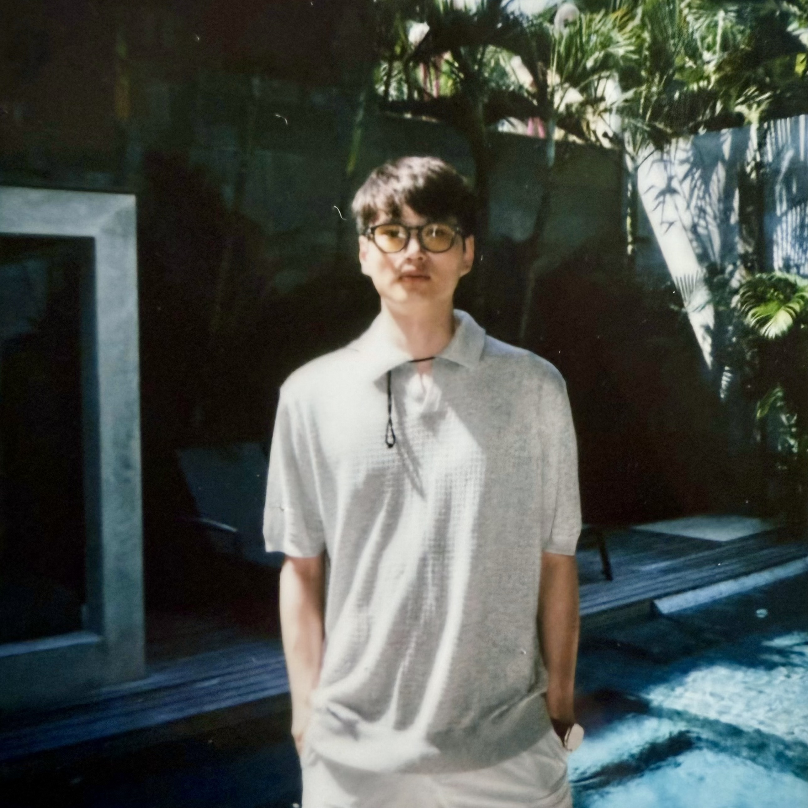
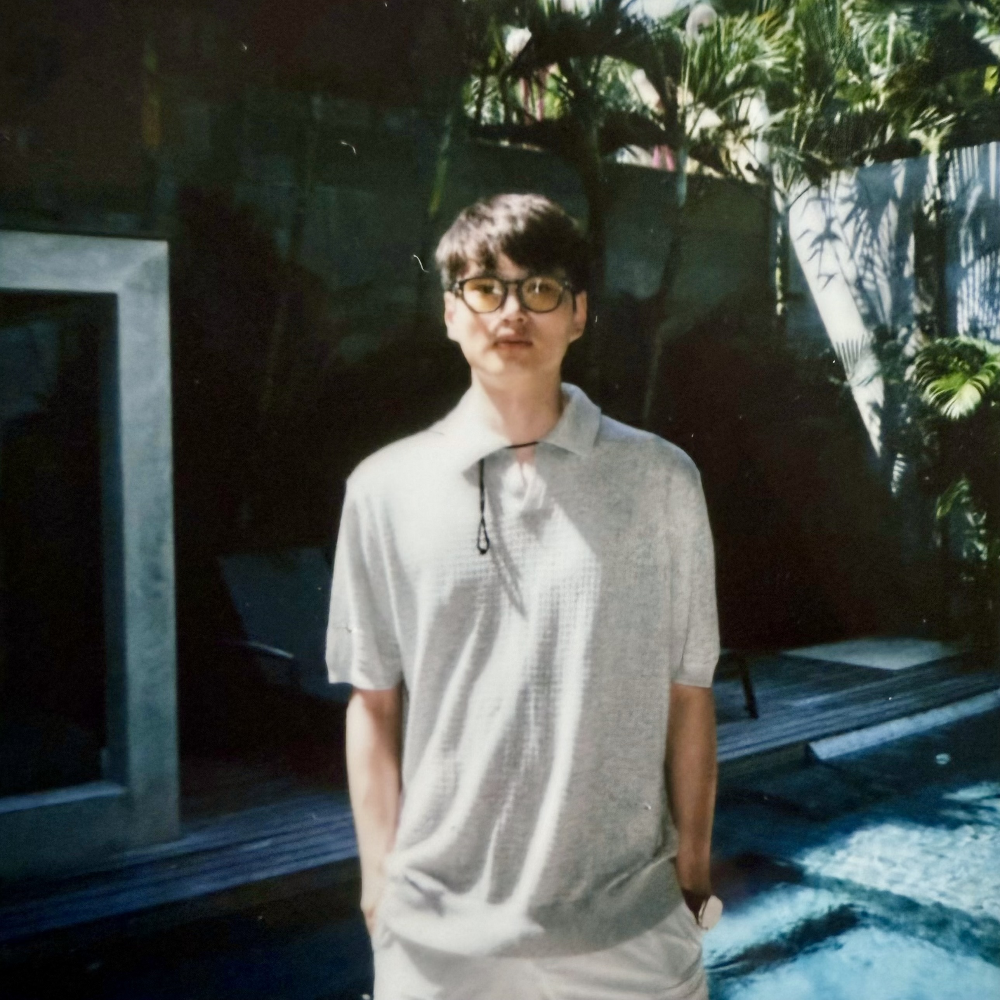

Jinzhou Li
I am a first-year PhD student in Robotics at Duke University, advised by Prof. Xianyi Cheng. Before Duke, I worked with Prof. Hao Dong at Peking University. I did my master's at Cornell University, where I was advised by Prof. Maha Haji, and completed my bachelor's degree at the University of Vermont. I also had the chance to work with Prof. Daniel Hastings at MIT. My research interests focus on manipulation, multimodal learning, and robot learning, with the goal of enabling robots to act and think more like humans. I'm always happy to chat — feel free to reach out!
Email X Google Scholar LinkedIn Github

 


OpenTouch: Bringing Full-Hand Touch to Real-World Interaction
Yuxin Ray Song*,
Jinzhou Li*,
Rao Fu*,
Devin Murphy,
Kaichen Zhou,
Rishi Shiv,
Yaqi Li,
Haoyu Xiong,
Crystal Elaine Owens,
Yilun Du,
Yiyue Luo,
Xianyi Cheng,
Antonio Torralba,
Wojciech Matusik,
Paul Pu Liang
Technical Report
Webpage •
Paper

Hierarchical Policy: Multi-Frequency Action Chunking across Hierarchical Temporal Resolutions for Robotic Imitation Learning
Jiyao Zhang,
Zimu Han,
Junhan Wang,
Xionghao Wu,
Shihong Lin,
Jinzhou Li,
Hongwei Fan,
Ruihai Wu,
Dongjiang Li,
Hao Dong
Under Review
TwinAligner: Visual-Dynamic Alignment Empowers Physics-aware Real2Sim2Real for Robotic Manipulation
Hongwei Fan*,
Hang Dai*,
Jiyao Zhang*,
Jinzhou Li,
Qiyang Yan,
Yujie Zhao,
Mingju Gao,
Jinghang Wu,
Hao Tang,
Hao Dong
Under Review
ClutterDexGrasp: A Sim-to-Real System for General Dexterous Target Grasping in Cluttered Scenes
Zeyuan Chen*, Qiyang Yan*, Yuanpei Chen*, Tianhao Wu, Jiyao Zhang, Zihan Ding, Jinzhou Li, Yaodong Yang, Hao Dong
Conference on Robot Learning (CoRL) 2025
Oral Presentation (~5% of total accepted papers)
Webpage •
Paper •
Code •
Video
AdapTac-Dex: Adaptive Visuo-Tactile Fusion with Predictive Force Attention for Dexterous Manipulation
Jinzhou Li*,
Tianhao Wu*,
Jiyao Zhang**,
Zeyuan Chen**,
Haotian Jin,
Mingdong Wu,
Yujun Shen,
Yaodong Yang,
Hao Dong
IEEE/RSJ International Conference on Intelligent Robots and Systems (IROS) 2025
Webpage •
Paper
•
Code •
Hardware •
Video

SimLauncher: Launching Sample-Efficient Real-world Robotic Reinforcement Learning via Simulation Pre-training
Mingdong Wu*,
Lehong Wu*,
Yizhuo Wu*,
Weiyao Huang,
Hongwei Fan,
Zheyuan Hu,
Haoran Geng,
Jinzhou Li,
Jiahe Ying,
Long Yang,
Yuanpei Chen,
Hao Dong
IEEE/RSJ International Conference on Intelligent Robots and Systems (IROS) 2025
Webpage •
Paper •
Video

Canonical Representation and Force-Based Pretraining of 3D Tactile for Dexterous Visuo-Tactile Policy Learning
Tianhao Wu,
Jinzhou Li*,
Jiyao Zhang*,
Mingdong Wu,
Hao Dong
IEEE International Conference on Robotics and Automation (ICRA) 2025
Webpage •
Paper •
Code •
Video
2025
Joined Duke University as a PhD student, advised by Prof. Xianyi Cheng2024
Joined Peking University as a visiting student, advised by Prof. Hao Dong